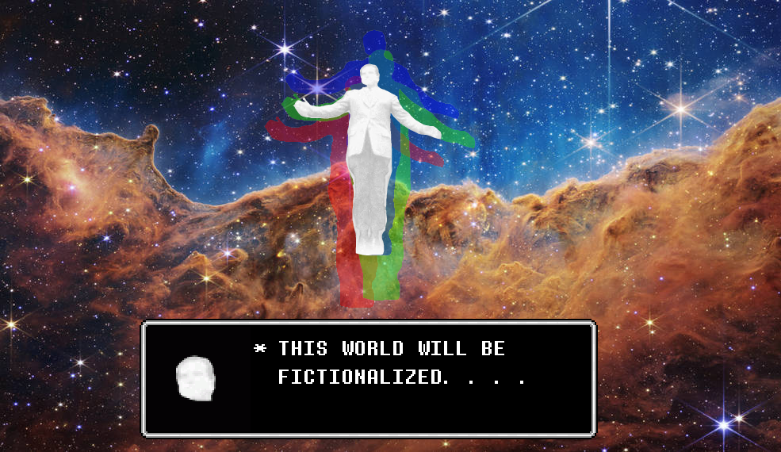

I don't personally, like watching TV or modern movies but analog horror is certainly fantastic.
What I included here was a video to catch you up with the orginal series this was based on.
://What is the nixonverse:
Spinoff series of The Monument Mythos, which is more of a sequel to the series.

I really don't like super hero movies, but this series does is take a close look on the morality of super heros.
Creating a analog superhorror, the question of living with beings with extraordinary power.
The Monument Mythos explores Alternate History, while the nixonverse focuses on characters.
The whole idea of the nixonverse started with fans of the monument mythos, calling our reality the
nixonverse since in the monument mythos James Dean (The movie star), becomes president instead of richard nixon.
Thus the monument mythos is in Deanverse, while our world is the nixonverse.
://THE LAST SON OF ALCATRAZ:
The first character this series looks at a parody of superman, called the last son of alcatraz (since superman is considered the last son of krypton).
The last son interferes with World War 2, stopping the Atomic bombings of Hiroshima and Nagasaki fundamentally leading to the end of world war 2.
The United States government, becomes concerned with idea of beings. comparing him to a giant to conquer them all.
://Why is it great?:
Keep in mind, these videos are mysteries with a deeper meaning. Not really horror, but more of the horror of the unkown. Of course,
am only summarizing the first video of the 11 videos. its soo much better, to watch the whole series than it to be explained directly.